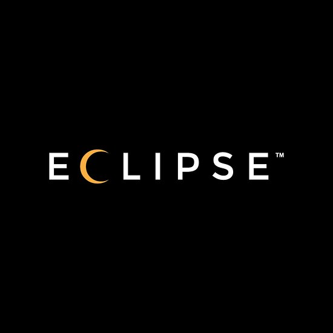
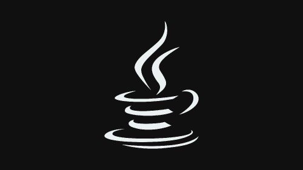
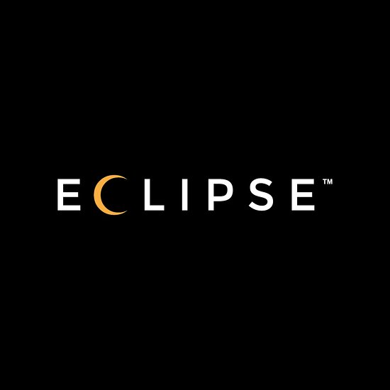
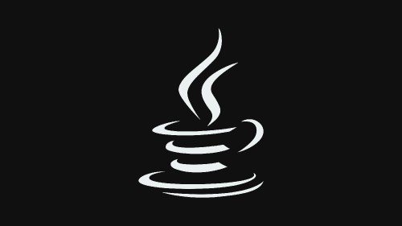

Competences
--Connaissances du système UNIX-Langage, --C (Algorithmie,Programmation Graphique,Programmation Système), --BASH (automatisation detaches récurrentes), --C++ (Orienté Objet
Logiciels IDE
 



Experiences
-Réparation d' appareils électroniques (ordinateurs, téléphones, tablettes) (sept. 2019 - déc. 2019) Sas lcds (La clinique du smartphone), Paris
Auxiliaire de vacances (juil. 2017 - août 2017) Société Générale (Services des prêts aux professionnels), Paris-Numérisation de dossiers-Contrôle de conformité a l'aide d'un listing
Auxiliaire de vacances (juil. 2016 - août 2016) Société Générale (Services des prêts aux professionnels), Paris-Taches administratifs diverses-Numérisation de dossiers
Etudes
Ecole d'informatique (2018 - 2021) Epitech, Paris
Licence Ingénierie Mathématiques et Informatique (2016 - 2017) Université Paris-Est-Marne-la-Vallée (UPEM)
Baccalauréat Economique et Social spécialisation Mathématiques (2013 - 2016) Blanche de Castille, Villemomble
Loisirs
Handball en club (2010 - 2016)
Judo (2002 - 1010)